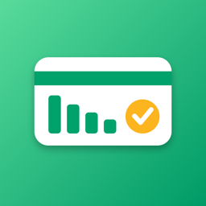

Destek
İletişim
Soru, öneri veya hata bildirimi için e-posta gönder: ahmetomertelli@icloud.com
Sık sorulan sorular
Bankama bağlanıyor mu? Hayır. Bankadan indirdiğin ekstre dosyasını (PDF veya Excel) yüklersin; uygulama kartı, tarihleri ve harcamaları ondan okur.
Tutarlar neden “tahmini” yazıyor? O ayın ekstresi henüz yüklenmediyse asgari ödeme ve son ödeme tarihi tahmin edilir. Ekstreyi yüklediğinde bankadaki gerçek değerler kullanılır.
Ekstrem okunmuyor. Ekstreyi bankanın mobil uygulamasından veya internet şubesinden PDF ya da Excel (XLSX) olarak indir. Eski .xls dosyalarını Numbers ile açıp .xlsx olarak kaydet. Hâlâ okunmuyorsa bankanın adını yazarak bize e-posta gönder.
Yapay zeka danışmanı neyi gönderiyor? Sadece bütçe raporundaki toplamları ve sorularını; kart numarası veya ekstre dosyası gönderilmez. Ayrıntılar gizlilik politikasında. Ayarlar > Yapay zeka bölümünden kapatabilirsin.
Pro satın aldım ama görünmüyor. Ayarlar > Satın alımları geri yükle'ye dokun.
Yeni telefona geçtim. Pro ile iCloud eşitleme açıksa verilerin otomatik gelir. Değilse eski telefonda Ayarlar > Tüm verileri dışa aktar ile yedek alabilirsin.
Support (English)
Email: ahmetomertelli@icloud.com. To restore Pro, tap Settings > Restore purchases.